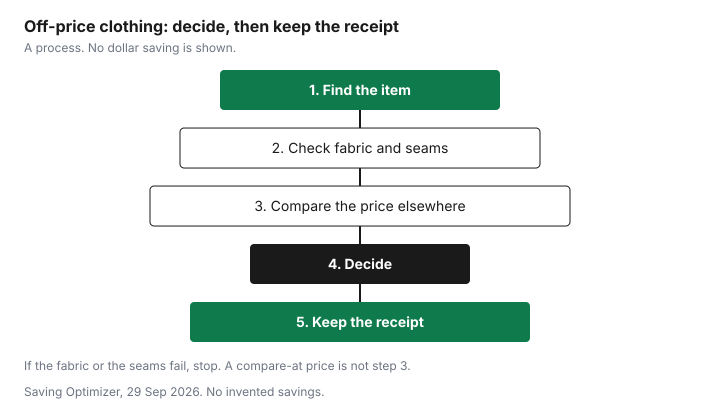

Clothing · Canada
How to Shop Winners, Marshalls and HomeSense for Clothing: Restock Patterns, Tags and Return Rules

Off-price shopping is a treasure hunt with a bad scoreboard. The compare-at price feels like a saving, and the saving is only real if the garment is sound and the other price was a price someone actually charged. This page is how to shop Winners, Marshalls and HomeSense for clothes without turning a tag into a fact. The return wording below is from the Marshalls and HomeSense return pages and the HomeSense contact page, as of 29 Sep 2026. Read the page in the store before you treat it as the cashier's rule. No markdown-day or tag-colour system is included, because none is published on the store pages.
Key takeaways
- Stock differs by store because off-price racks are not a national planogram you can memorize. Shop the garment in front of you.
- A compare-at price is a reference price. The Competition Bureau's volume and time tests are the check. The guidelines are dated 16 October 2009 and the page says they are under review.
- Do not shop a sticker-colour rumour.
- Marshalls and HomeSense return text as of 29 Sep 2026: 10 days in the original tender with receipt and tickets, then a gift card. STYLE+ extends that original-tender window to 30 days and is described as usable at participating Winners stores too. Confirm Winners on its own page.
- Keep the receipt. A find you cannot return is a different price.
How off-price retail works and why stock varies by store
These banners sell brand-name goods that did not stay on a full-price floor: cancelled orders, end of a colour, packs a department store did not reorder, and goods bought for the off-price channel. The mix is why one Winners has the shirt and the one across the city does not, and why a Monday trip is not a schedule. Go when you can try clothes on, not because a forum named a delivery day.
HomeSense is the home banner in the same corporate family. Clothing shows up there too, and the HomeSense return text matches the Marshalls clothing rules closely enough that both are in the table. Treat a home-goods exception, if the tag states one, as that tag. The flyer guide is how a full-price banner publishes a price you can compare. Off-price often does not publish a flyer for the piece in your hand.
Reading tags: compare-at prices and what they do (and don't) prove
The compare-at line is someone else's price, or a price the tag wants you to believe was the price. It does not, by itself, prove that suppliers sold a substantial volume at that figure.
The Competition Bureau's ordinary-price guidelines, dated 16 October 2009, as of 29 Sep 2026, set out two tests. The volume test is more than 50 percent of sales at or above the reference price, generally over twelve months, shorter for seasonal goods. The time test is an offer in good faith for more than 50 percent of the time, generally six months, again shorter for seasonal goods. The Bureau's page says the guidelines are being reviewed after Competition Act changes. This guide does not quote the penalty dollars in those guidelines as current.
This guide cites no Winners definition of "compare at", so do not assume one. Use the tag as a claim, then do step 3 on the chart: find a price elsewhere for the same garment, or stop calling it a saving. A price adjustment is a different tool. It is your own retailer's later drop. An off-price compare-at line is not that policy.
Clearance and markdowns: what the stores do and don't publish
What these pages do publish is a return window, a receipt rule, and a gift-card path. What they did not publish, in the text as of 29 Sep 2026, is a day of the week for markdowns or a meaning for a sticker colour.
Omit the rumour. If a shirt is reduced, the new price is on the tag. Compare that number. The clothing calendar is season logic for the wider market, not a Winners markdown date.
Marshalls' return page still printed a holiday window for purchases from Monday 27 October 2025 to Wednesday 24 December 2025, returnable until Thursday 8 January 2026, with a sales or gift receipt. That window is in the past as of 29 Sep 2026. The HomeSense return text as of the same date did not include that paragraph. Do not reuse 2025 dates for Boxing Day 2026. Read whatever the page says when you are in the store.
Checking quality: seams, fabric content, fit
The lower price is only interesting after the garment passes. Look at seams for puckers and loose thread that is not a finish.
Read the fibre-content label. A lining that is torn is a repair you did not price. A zip that sticks in the store will stick at home. Fit is the try-on, including sitting down if it is trousers. The Competition Bureau also administers the Textile Labelling Act. That is why a fibre label exists to be read. This page does not recite a labelling regulation beyond that.
| Check | Pass | Fail |
|---|---|---|
| Seams | Even stitches, no holes, no open seam | Puckers, skipped stitches, a seam that is already letting go |
| Fabric content label | You can read the fibres and you accept the care line | No label, or a care line you will not follow |
| Lining | Attached, no tears, does not hang below the hem unless it is designed to | Torn, twisted, or missing where the style needs it |
| Zips and closures | Runs, and the pull stays on | Sticks, or a button is hanging by a thread |
| Fit | Works with the layers you will wear, including sitting | You plan to "get it altered" without a quote |

Returns, receipts and gift receipts
Keep the register receipt. The Marshalls return page and the HomeSense return page, as of 29 Sep 2026, both say they will refund within 10 days with the original register receipt and tickets attached, in the tender paid, and that you may take a gift card instead.
After 10 days, with the receipt and tickets, the refund is a gift card for the amount paid, and those pages say the gift cards do not expire. A gift receipt may be exchanged or receive store credit only. Merchandise in unsellable condition is refused. Other restrictions may apply. STYLE+ members get 30 days for a refund in the original tender, and both pages say the program is free to join.
Without a register receipt, both pages say a government photo ID is required and any refund is a gift card, and that returns may be limited or declined. They say the ID number is not retained. It is converted to a substitute number stored with the ID type, name and address. The HomeSense return text also says underwear, earrings, diamond jewellery, gift cards and face coverings are final sale. That sentence is in the HomeSense text, not the Marshalls text, so it is not applied to Marshalls here. This guide does not quote a Winners-only return page. The HomeSense contact page describes STYLE+ at participating Winners, HomeSense and Marshalls stores and lists 30-day returns as a benefit. Confirm the Winners 10-day line on winners.ca before you quote it. The wider Canadian picture is the return-policy guide.
| Banner | Window and receipt | Final sale or other limit in the return text |
|---|---|---|
| Marshalls | 10 days with original register receipt and tickets, refund in the tender paid, or a gift card. After 10 days, a gift card. Gift cards do not expire. Gift receipt: exchange or store credit. STYLE+ : 30 days in the original tender. Free to join. | Unsellable condition refused. Other restrictions may apply. A 2025 holiday window was still printed and is past. No-receipt returns need photo ID and may be declined. |
| HomeSense | The same 10-day and 30-day STYLE+ wording in the return text as of the same date. | The same unsellable-condition line. Also, in that HomeSense text: underwear, earrings, diamond jewellery, gift cards and face coverings are final sale. |
| Winners | Check winners.ca/en/returns before you buy. HomeSense's contact page says STYLE+ works at participating Winners stores and lists 30-day returns. | Confirm final-sale lines on the Winners page or with a sales associate. Do not copy the HomeSense jewellery line across without reading it there. |
When off-price beats outlets or online sales and when it doesn't
Off-price beats an outlet or an online sale when you have tried the garment on, the quality checks passed, and the price you will pay is lower than a price you can verify elsewhere, including after a gift card you already hold. It loses when the compare-at number is the only "saving," when the size is a compromise, or when final sale means a mistake is yours.
Outlets and online sales can be the same garment with a return window. That window has a value. Price it.
A discounted gift card, if you use that offer type, comes off before you compare. It does not make a failed seam into a pass. Used clothing is a different aisle, on the used-goods guide. Do not mix a compare-at tag with a thrift price and call both the same method.
Sources
- Marshalls Canada return page, marshalls.ca/en/returns, as of 29 Sep 2026. Ten days, receipt and tickets, tender paid, then gift card, gift cards do not expire, gift receipt, unsellable condition, STYLE+ 30 days, free to join. Holiday window printed for 27 October 2025 to 24 December 2025, returns until 8 January 2026. No-receipt path uses photo ID.
- HomeSense return page, homesense.ca/en/returns, as of 29 Sep 2026. Same 10-day and STYLE+ wording in that text, plus a final-sale line for underwear, earrings, diamond jewellery, gift cards and face coverings.
- HomeSense contact page, as of 29 Sep 2026. STYLE+ described at participating Winners, HomeSense and Marshalls stores, including 30-day returns. Winners.ca/en/returns is not quoted as a full policy.
- Competition Bureau, Ordinary Price Claims, guidelines dated 16 October 2009, as of 29 Sep 2026. Volume and time tests as in the Black Friday guide. The page says the guidelines are under review. The Bureau administers the Textile Labelling Act.
Frequently asked questions
Is the 'compare at' price at Winners real?
A compare-at figure is a reference price, and it does not prove itself. The Competition Bureau's ordinary-price tests ask whether a substantial volume sold at or above that price, or whether it was offered in good faith for a substantial period. Those guidelines are dated 16 October 2009, and the Bureau's page says they are under review after Competition Act changes. This guide does not cite a Winners definition of compare-at, so the tag is not treated as that proof.
When does Winners mark down clearance?
Tag-colour systems and named markdown days were not on those pages either, so they are not repeated here. The price to use is the price on the tag in your hand, compared with a price you can find elsewhere today. A rumour about a sticker colour is not a schedule.
What is Winners' return policy?
This guide does not quote a Winners-only rule from the Winners returns page. Marshalls and HomeSense return pages, as of 29 Sep 2026, say 10 days with the original register receipt and tickets for a refund in the tender paid, then a gift card, with STYLE+ extending the original-tender window to 30 days. The HomeSense contact page describes STYLE+ , including 30-day returns, at participating Winners, HomeSense and Marshalls stores. Confirm Winners on the store page before you rely on it.
Are Winners clothes the same quality as at department stores?
Some garments are the same construction you would see elsewhere, and some are not, and the rack will not label which. Check seams, the fibre-content label, the lining, the zip, and the fit. A compare-at price is not a quality grade. If the garment fails the checks, the lower ticket is not a saving.
Is shopping at Winners cheaper than outlets?
It is cheaper when the price you pay, for a garment that passes the quality checks, is lower than the same garment or a true substitute somewhere else, after returns. It is not cheaper when the compare-at price is doing the work and the garment is final sale or the wrong size.
Researched and drafted with AI assistance and fact-checked against official Canadian sources. How we create content.